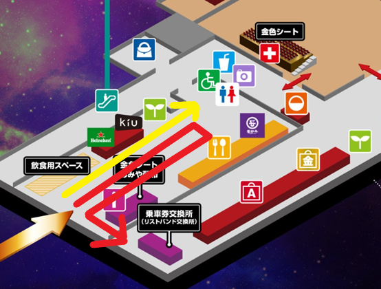
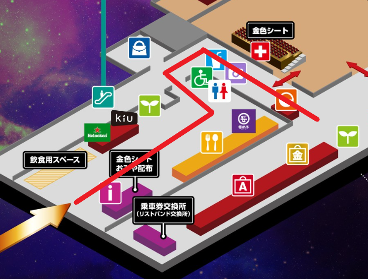
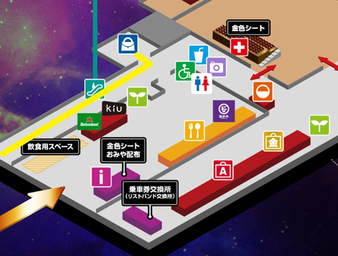
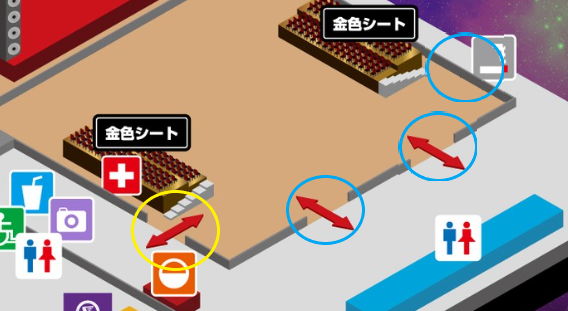
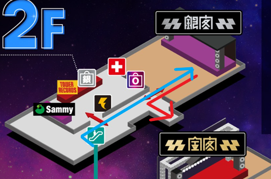
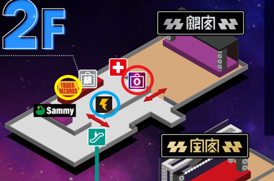

換手環
換手環 & 入場動線
- 紅線：換手環
- 金色線：購票時選擇「寄送手環」的人列隊處

換手環、周邊、寄物、入場——一樓是進場前要處理的事情。
換手環

周邊

寄物
取行李：工作人員會先看你的牌子，拿到後再問你的名字。
響都的寄物是最人性化的：尖峰時段（主舞台演出完）會增加人力，基本上不用五分鐘就能拿到行李，結束時也是。作者看完出來五分鐘就拿到行李換裝了。

入場
響都的入場方向會一直調整，以現場指示為準。
大舞台爆滿需要疏散時，會額外加開吸菸區的門（但出來就會一堆煙味）。

小舞台所在樓層，有人數管制；周邊與休息空間也在這裡。
入場・出場
二樓有人數管制，有想看的團，建議提早 15 分鐘上去。
入出口是同一個，所以想看下一團的樂迷進來、上一團的要出去，會變得超擠、疏散超慢。如果要接著看下一個大舞台，建議小舞台放棄，或提早離開。

周邊服務
